Claude Code, Codex, Cursor and every other coding agent keep a plain-text log of each session. Every key you pasted and every .env the agent read is in there. spillage finds them, tells you how they got there, cleans them out and stops the next one.
brew install maximilianfeix/tap/spillagepipx install git+https://github.com/maximilianfeix/spillage, then run spillage
Everything runs on your machine. Keys are only ever shown as a masked prefix and a fingerprint.
Finds the keys in every agent's logs and says whether you pasted them, a tool printed them or the model repeated them, with a link to rotate each one.
Redacts them in place without breaking the JSON your agent reads back when you resume a session.
Blocks the next leak with hooks in Claude Code, Codex and Gemini CLI: prompts with keys, reading .env, printenv.
Notifies you within seconds when a key lands in any agent's log, Cursor and Aider included.
Claude Code, Codex CLI, Cursor, Gemini CLI, Cline, Roo, Kilo, OpenCode, Aider, SpecStory, Continue and Copilot CLI. Plus any folder you point it at.
SpecStory and Aider save conversations inside the project, and from there they get committed. spillage repo finds them and the keys inside, and ships as a GitHub Action and a pre-commit hook.
GitHub code search, September 2026: about 16,000 SpecStory histories and 5,000 Aider histories.

No dependenciesStandard-library Python 3.9 and up. Nothing to audit but the code.
No networkNo telemetry, no update check, no key validation calls.
Few false alarmsChecksums for GitHub tokens, decodable JWTs, placeholder filtering.
56 rulesIncluding the AI stack gitleaks doesn't cover: Claude Code OAuth, Supabase, LangSmith, Pinecone.
FastAbout 240 MB of real agent history in under 4 seconds on a laptop.
MIT licensedIssues and new rules welcome.